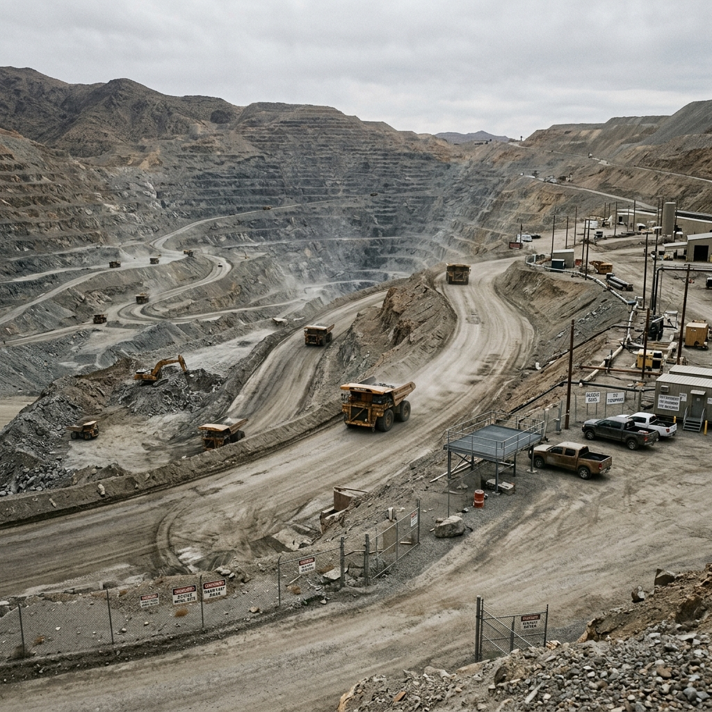
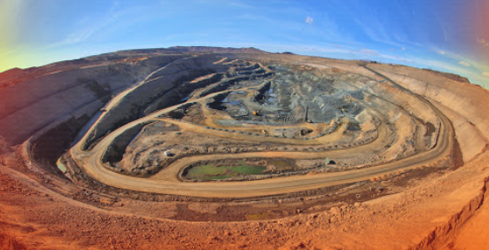
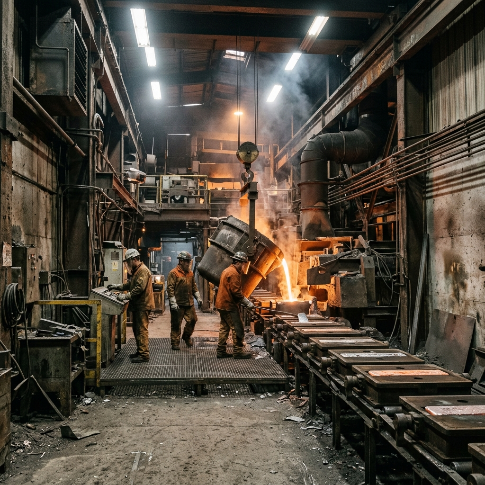

میراث معدنکاری و سیر تاریخی
مس کرمان؛ میراث ۶۰۰۰ ساله فلزکاری
کاوشهای باستانشناختی در محوطههایی همچون «تل ابلیس» و «تپه یحیی» گواه آن است که استان کرمان از نخستین خاستگاههای ذوب مس و متالورژی در جهان باستان بوده است. نیاکان ما در این دشت پهناور، قرنها پیش از عصر صنعتی مدرن، با روشهای سنتی اقدام به استخراج کانسارها و ساخت ابزار مفرغی و مسی و صادرات آن به تمدنهای همسایه میکردند. این میراث تاریخی، الهامبخش ما در احیا و توسعه پیشرفتهترین روشهای فرآوری فلز سرخ در عصر حاضر است.
اکتشاف ذخیره سرچشمه
در اواخر دهه ۱۳۴۰ خورشیدی، وجود یک دگرسانی عظیم و کانسار مس پورفیری در دره سرچشمه کرمان با ارزیابیهای ژئوشیمیایی و زمینشناختی پیشرفته تایید شد. این ذخیره بزرگ، با عیار متوسط بالا، یکی از غنیترین و بزرگترین تودههای معدنی مس جهان است که نقطهعطفی در ورود ایران به صنعت متالورژی سنگین گردید.
تجهیز و توسعه صنعتی
به موازات پیشرفت طراحیها، کارخانجات تغلیظ، ذوب و پالایشگاه الکترولیز مس به سرعت برنامهریزی و احداث گردید تا چرخه استخراج تا شمش مس کاتدی در قلب استان کرمان تکمیل گردد. مس کرمان زمین امروزه با ارتقای دانش مهندسی و بازسازی تجهیزات، یکی از پیشتازان بازارهای منطقهای است.
توسعه پایدار بومی و مسئولیتهای زیستمحیطی
ما متعهد به ایجاد همزیستی مسالمتآمیز میان صنعت سنگین و حفظ اکوسیستمهای طبیعی کرمان هستیم. احداث کارخانجات اسید سولفوریک با هدف پالایش کامل گازهای خروجی کوره، توسعه فناوریهای بازیافت آب و کاهش نرخ مصرف انرژی الکتریکی در صنایع فرآوری، گامی جدی در جهت معدنکاری سبز است. همچنین پشتیبانی از پروژههای عمرانی منطقه و اشتغالزایی گسترده برای متخصصان و نخبگان استانی، اولویت کلیدی منشور اجتماعی ما است.
زنجیره کامل ارزش؛ از خاک تا کاتد مس

۱ استخراج و استخراج روباز (Mining)
استخراج مواد معدنی کانسار پورفیری سرچشمه با روش استخراج روباز (Open-Pit Mining) در پلههایی با ارتفاع مناسب صورت میپذیرد. عملیات چالزنی، آتشباری سنگهای سخت و ترابری با غولپیکرترین کامیونهای معدنی (دامپتراک) سنگ شکنها را به کار میاندازد. نظارت مانیتورینگ آنلاین دیسپچینگ، ضامن امنیت و راندمان این فرآیند شبانهروزی است.

۲ تغلیظ سنگ مس (Concentration)
سنگ معدن خرد شده در آسیابهای گلولهای و نیمهخودشناور به ابعاد میکرومتری خرد میشود. سپس در سلولهای فلوتاسیون با افزودن شناورکنندههای شیمیایی، ذرات مسدار از باطله جدا شده و عیار مس سنگ خام از ۰.۶ درصد به ۲۸ درصد در قالب کنسانتره مس صعود میکند.

۳ ذوب و تولید آند (Smelting)
کنسانتره مس تغلیظ شده در کورههای پیشرفته شعلهای و فلش حرارت داده شده تا ناخالصیها در قالب سرباره تخلیه و مس مات با عیار بالای ۶۰ درصد حاصل شود. در مرحله بعد با فرآیند دمیدن اکسیژن در کانورترها، مس تاولزا تولید شده و سرانجام مس آندی با خلوص ۹۹.۳ درصد برای ریختهگری در چرخ آند ریخته میشود.

۴ تصفیه الکترولیتی و کاتد مس (Refining)
در آخرین مرحله از زنجیره تولید، صفحات آند مس در وانهای الکترولیت حاوی سولفات مس قرار گرفته و با اعمال جریان الکتریکی، یونهای خالص مس به سمت ورقههای کاتد جذب میشوند. محصول نهایی، کاتد مس با خلوص عالی ۹۹.۹۹ درصد است که آماده عرضه در بورس کالا و بازارهای صادراتی جهانی است.
با تکیه بر خودباوری ملی، مسآفرین آینده کشوریم
صنایع و معادن مس کرمان زمین مصمم است با تکیه بر توان داخلی و پیادهسازی فناوریهای هوش مصنوعی معدنی، فرآیندهای سنتی را دگرگون ساخته و تولید پایدار خود را به تراز بینالمللی برساند.
تعهد به کیفیت مطلق
تولیدات ما طبق آخرین استانداردهای LME بوده و در بازارهای جهانی قابل رقابت است.
توسعه سرمایه انسانی
ایجاد زمینه رشد تخصصی برای هزاران جوان بااستعداد بومی استان کرمان.
حفظ محیط زیست کرمان
کاهش آلایندگی با سیستمهای کنترل آنلاین و فیلتراسیون کوره ذوب.
رونق بازارهای ملی
تضمین تامین پایدار مواد اولیه برای صنایع پاییندستی برق، فولاد و الکترونیک.